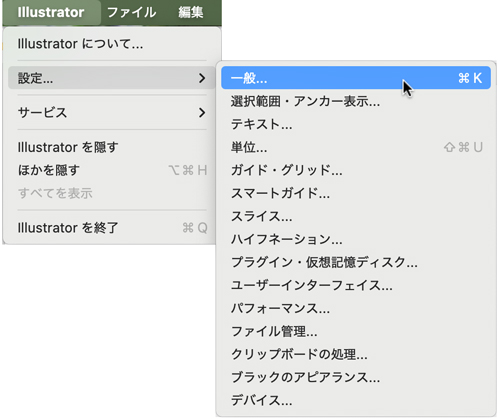
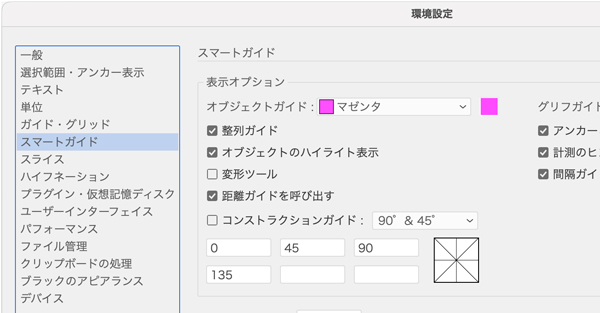
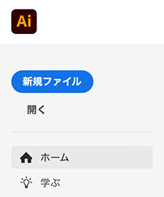
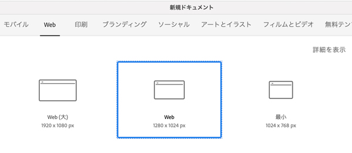
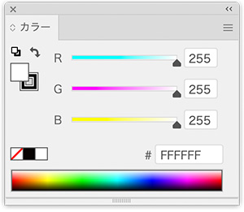
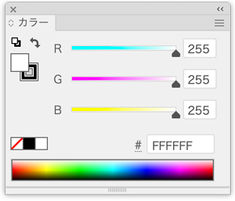
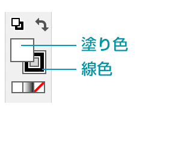
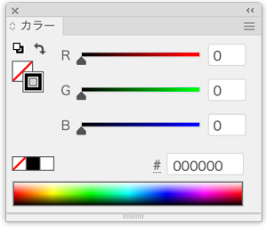
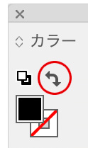

Adobe Illustrator v30.0
- Vector（ベクトル）データを作成するアプリケーション
Vector Data
- ベクトルデータは、点や線、多角形などの図形を数式で表現したデジタルデータです
- 数値を使って絵を描くイメージで、拡大・縮小しても画質が劣化しません
Adobe Illustrator を学ぶ（Adobe ラーニング）
環境設定（kaleidoscope）
- Win：「編集」メニュー → 「環境設定」（Ctrl + K）
- Mac：「Illustrator」メニュー → 「設定」 → 「一般」

「スマートガイド」
- 「変形ツール」のチェックを外す
※チェックを外さないと、Shiftキーを使った操作がうまく完結できません。

ドキュメントの選択

- 「ファイル」メニュー → 「新規」を選択
Webの場合
- 「Web」を選択

- カラーパレット

カラーの設定
- カラーパレットの設定


- カラー：塗りを前面にして「透明」をクリック（カラーパレット 塗り：なし 線色：自由）

- カラー：塗りと線の色を入れ替える
